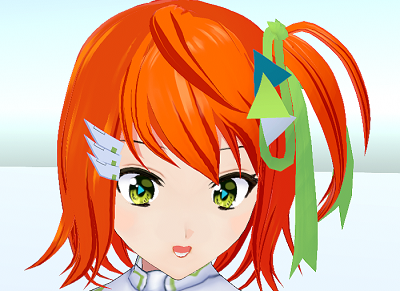

VRM を改良する場合の注意点を記載します。
VRoidStudio で作成した VRM を古い UniVRM で Unity にインポートすると
目のボーンの設定値が変化してしまい、目の移動範囲が狭くなり、
VRM へのエクスポート前に目の修正が必要になります。
※Unity にインポートする場合は UniVRM 0.66 以降を使用してください。
3tene は PerfectSync に対応しています。
PerfectSync に対応した VRM を使用する事で動作します。

もし使用している VRM が VRoidStudio で作成しているのであれば
3tenePRO に同封されている FaceForge を使う事で対応できるかもしれません。
※別途、VRoidStudio で作成され PerfectSync に対応した VRM が必要になります。
詳しくはFaceForge についてを参照してください。
3tene では VR に対応している為、VRM は First Person に対応している必要があります。
対応していないと目、まぶた、口が２重に表示されるといった現象が発生します。
VRM を First Person に対応させるか、該当する顔の部位に
「Third Person Only」に設定変更を行って First Person を無効にしてください。
※First Person を無効にすると VR 使用時の描画に問題が発生します。